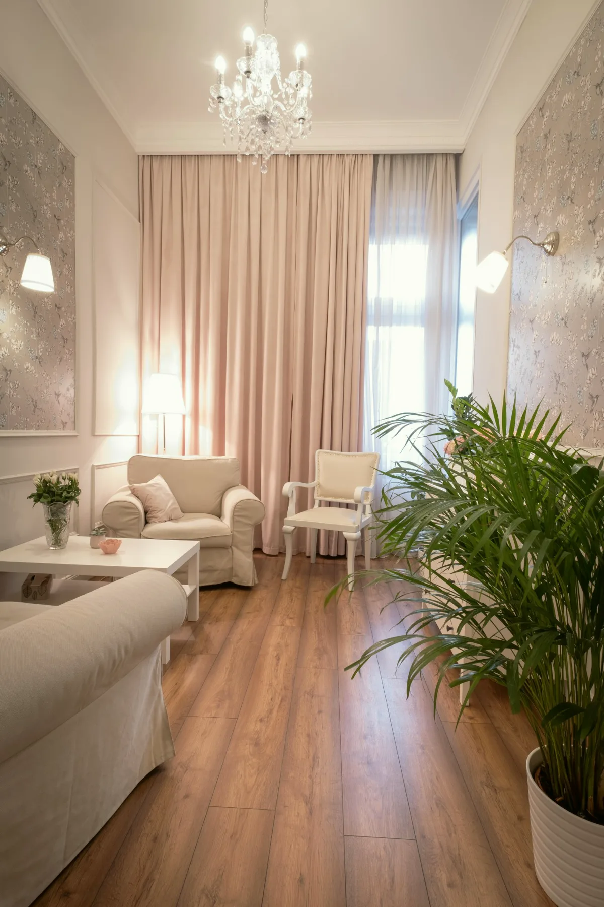

Egy szakmai mérce
Negyvennégy szakember dolgozik a házban, egy szakmai vezetés alatt. A párosításnál téma, korosztály, időpont és díjsáv szerint javaslunk kollégát a regiszterből.
Amivel küzd
Szorongás, pánik Hangulat, depresszió Kiégés, stressz Gyász, veszteség Párkapcsolati válság Kamasz otthon Függőség Önismeret, életvezetésAmit kínálunk
Felnőtt egyéni terápia Pár- és családterápia Gyermek és serdülő Csoportterápiák Coaching Pszichiátriai szakrendelés Sportpszichológia Cégeknek

Rendelő és állami akkreditált szakképzőhely a Mészáros utca 18. első és második emeletén. 44 szakember, egy szakmai vezetés alatt.
Évszám, tény és kiállító. Az oldal többi része arról szól, mit jelent ez a mindennapi rendelésben.
Felnőtt klinikai és mentálhigiéniai szakpszichológus szakképzőhely.
Állami akkreditáció · Pécsi TudományegyetemPszichoterapeuta szakképzőhely, mind a négy módszertani akkreditációval.
Állami akkreditáció · Pécsi TudományegyetemEgyüttműködés az ELTE PPK-val: mesterszakos hallgatók klinikai gyakorlata a Központban.
ELTE PPK44 szakember, nyolc szoba két emeleten, rendelés hétköznap 8-20.
Soulshine Egészségügyi Szolgáltató Kft.A szakmai vezető
Szakpszichoterapeuta, klinikai szakpszichológus, integratív hipnoterapeuta, pszichodráma-vezető. A Központ szakmai vezetője.
Mindnyájunk életében van, hogy elakadunk, zűrzavar, szenvedés uralkodik körülöttünk, amikor úgy érezzük, hogy az ég szürke. Higgye el, ez nem jelenti azt, hogy a nap örökre eltűnt.
Pszichodráma-csoportokat és magánrendelést 2007 óta vezet. Pszichoterapeuta szakvizsgáját a Pécsi Tudományegyetemen tette 2021-ben.
Nem küldetésnyilatkozat. Az, ami a rendelés mindennapjaiban ellenőrizhető.
Negyvennégy szakember dolgozik a házban, egy szakmai vezetés alatt. A párosításnál téma, korosztály, időpont és díjsáv szerint javaslunk kollégát a regiszterből.
Akkreditált szakképzőhelyként a képzésben lévő kollégák munkáját kiképző szupervízió kíséri, belső és külső szupervízorokkal. Ön ezt nem látja az ülésen, de a keretet ez tartja.
Ha nem alakul ki a bizalom, nem kell új rendelőt keresnie. Elég jelezni az ügyfélszolgálatnak, és a regiszterből mást javaslunk. Ezt nem kell megmagyarázni.
Ötven perc egy alkalom, a díj a képzettség szerinti sávban, előre ismerten. Az első egy-három alkalom után Ön és a szakember közösen döntenek a folytatásról.
A jövő klinikusai és pszichoterapeutái itt tanulják a szakmát, az ELTE hallgatói itt gyakorolnak. Aki tanít, annak a saját munkája is mérce alatt áll.
Az egyik a szakképzőhelyi akkreditációk kiállítója, a másik a gyakorlat küldője. Részletek az Akkreditáció és képzés oldalon.
A két állami szakképzőhelyi akkreditáció kiállítója: felnőtt klinikai és mentálhigiéniai szakpszichológus szakképzőhely 2020, pszichoterapeuta szakképzőhely 2022.
A gyakorlat küldője: mesterszakos hallgatók klinikai gyakorlata a Központban 2022 óta, a ház szakembereinek vezetésével.
Két emeleten rendelünk, a szobák berendezése lakásé, nem rendelőintézeté: kanapé, fotelek, lámpafény. A bejárati kódot az időpont visszaigazolásában küldjük.